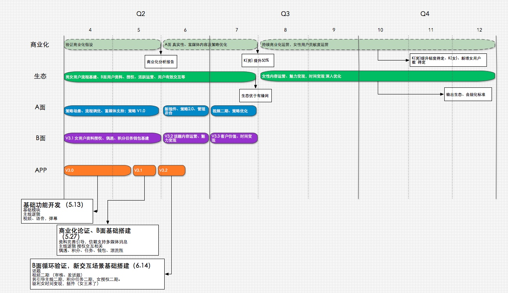
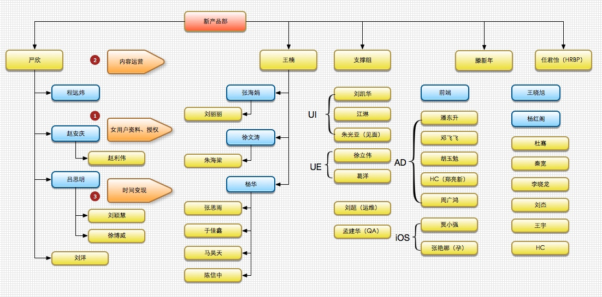
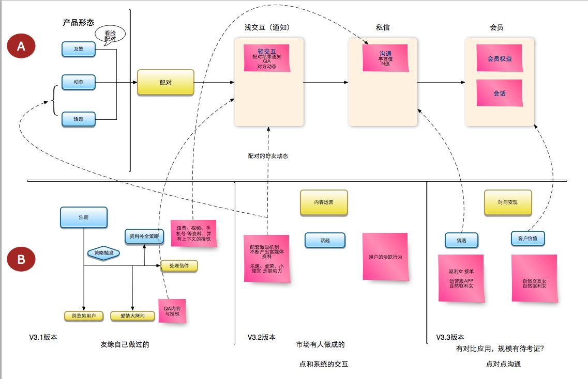

周二召开新产品部门产品汇报及讨论会，让商务，技术及用户中心了解部门的产品方向和规划，私下了解效果不错，包括华明、士正、占潮等对整个框架比较认可并受到鼓舞。我们将定期（4周左右）举办这种形式的会议来通报进度并安排讨论。
本周将部门工作的里程碑统一，让部门所有人对项目不同层面的考虑有所了解，让组员知道在更高层面对他们的要求是什么，能有效协调各部门之间的工作。
下图是部门进度的初稿，我将会在这个基础上不断的进行目标管理及变动管理。

摘要
- 本周确定了版本计划，6.14日前版本升级到 v3.2版本。
- 本周五，发布了绝配V3.0.1 版本，搭载策略 v1.0版本。
- B面资料和授权，积分，任务，钱包均已进入开发状态。内容运营和时间变现仍在开发评审或需求设计阶段。
- 下周将在广点通渠道进行小范围的跑量，看看在模拟生态下的商业化能力。
- 客户端开发技术不足，这几周一直找华明协调人员，一个HC开始启动招聘，临时调用 李岩及广志的两名前端（郑亮新，周广鸿）临时参与项目。
- 严格要求hrbp（任君怡），让其为招聘结果负责，同时协助管理团队人员的状态。
A面
主要目标： 5月份，验证真实性与富媒体内容对于arpu大幅提升做定量定性分析。
主要工作： 流程调优，引导策略优化，功能优化为主。
主线支撑业务单元
主线流程相关：
参与主线流程的跟踪开发及优化讨论
增加B面主线流程及通知回赞相关需求通知相关：
完成通知类-空间类，插件类消息类型确认及需求提出
更新主线流程相关通知数据字典，
跟踪并优化通知界面美术效果
推进系统通知相关规划设计
推进QA及回复模板1美术效果优化迭代优化项目相关：
完成男用户侧语音，图片，视频信箱发送功能
与策略组讨论漂流瓶项目的策略需求并调整相关方案与女用户侧协调沟通相关：
参与女用户侧相关会议，讨论A,B面功能对接事项对男用户侧其它部分建议沟通相关：
参与A面空间，及策略相关会议讨论；版本联调测试优化相关：
进行了2.6及3.0等版本的联调及测试，查找到若干BUG，并跟进修正； 所有主线流程 及通知相关BUG均会在周五修正。
下周计划：
1） 阿波罗版本功能开发跟进 及 测试联调
2） 继续完成项目表中低先级项目
3） 继续与B面及策略组，插件组进行需求对接，优化调整相关流程功能
核心产品支撑业务单元
版本管理相关：
1） 跟进3.0.0版本bug修复，完成正式版上线。
2） 完成3.1.0版本相关需求立项讨论，确定具体开发成本及开发周期，启动开发。核心功能模块项目跟进：
1） 对方空间页：完成相关bug验收；优化部分细节，如缘分值调整等
2） 我的页面：编辑资料预览及功能模块调通，部分细节展示待优化（例如语音录制播放动效、视频二级页面不同展示等）
3） 视频：输出视频审核1.0需求，预计需要3天开发时间，计划放到3.2版本中进行开发本周确定A面未来3个月主要优化测试方向，下周会完成项目拆分细化
下周计划：
1、 跟进3.1.0版本开发
2、 推动后续项目落实：初步确定推进节奏，对阶段性项目做拆分启动，对长期优化项目做优化项细分补充
3、 跟进广点通投放情况，保证足够测试量的情况下，降低投放成本
B面
- 本周完善了和A面及技术间的合作机制：任何需求交技术开发前，均须经AB双方确认。公共模块资源按优先级排开发计划，B面单独模块直接排开发计划。所有需求，按统一的版本管理发布上线（每两周一次）
- V3.1的功能：资料和授权、积分、钱包均已进入开发阶段，预计5/27完成。偶遇模块由于评估工作量超过3周，计划6/4开发完成，和V3.2版本一同上线
- V3.2的功能：内容运营、时间变现基础已进入UI设计，预计下周能进入开发评审
- V3.3的功能：时间变现优化，仍在需求设计阶段
- 下周计划开始启动优质男用户富媒体资料的搜集工作（部分原料可使用微信组的产出）
组织建设
目前团队士气还是不错的，每周我会抽出两个中午，分别同AB两面的核心人员吃饭，交流进展和遇到的困难。下周预备找核心人员一起喝酒打打气。

新产品部门整体思路
阿波罗项目任务
- 开发一款符合新时代特征，具有充分市场竞争力的创新社交产品——绝配；
- 在全面提升ROI的同时，能够形成更加良好的线上生态，满足更严格的合规标准。
- 后续以该产品为基础，衍生出覆盖不同需求的多产品体系，并完成品牌升级。
绝配产品的定位
是面向中低阶层大众用户，以配对－交互－沟通为主要形式，满足用户交友需求。
实现手段
整体系统的设计围绕商业模型和生态模型展开，称为左腿和右腿。
商业模型
通过创新的产品形态、交互形式 + 视频、语音等富媒体内容，对男女用户形成强烈的真实感和乐趣刺激，从而大幅度提升付费转化率和活跃度。
产出：
男性用户 K值
女性用户：K值、新增数量。
生态模型
通过引导女性用户的活跃行为，从而实现会员价值兑现，从而形成良好的线上生态。
输出： 男女用户在线比例，合规标准
路径：会员价值（提升满意度，降低不满意度）、严格合规

阶段性目标：
- 5月底，验证商业模型的假设是否成立
- 7月底，K值提升50%以上，且生态优于有缘网标准。
- 12月底，形成良好生态，立住右腿。
逻辑流程
